The Minifaders window provides a compact view of all 48 faders. The 48 minifaders represent the same faders as the Faders space.
For users of earlier versions (0.7.6 and below): All At Zero and Lock Presets are now integrated into this window.
To open the Minifaders window, press [Shift-F10].
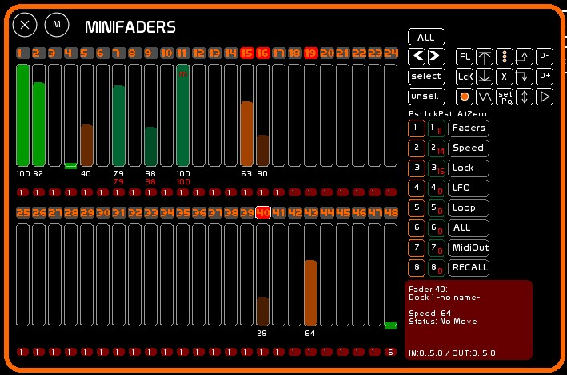
A number of actions can be performed here, identical to the Faders space:
Triggering actions works differently: you must select a minifader first to trigger the following:
This fader selection system opens up two other features of the Minifaders:
Each minifader displays:
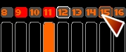
When hovering over a selection checkbox, it is highlighted in orange. When a minifader is selected, its checkbox turns red. The last selected minifader position is outlined in white.
A tooltip appears when manipulating or selecting a minifader, showing the active dock content — including label and timing information.
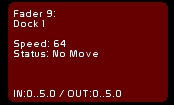
As with the Faders space, you can store (F1), clear (F4), modify (F2), report (F3), name (F5), set a time (F6) and assign dynamic content, by clicking the minifader selection checkbox.
The active dock will be affected by the operation.
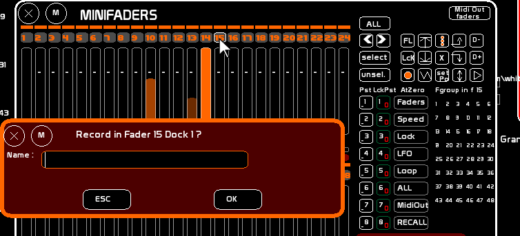
To select a minifader, click its selection checkbox. You can also move with the [<] [>] arrow buttons and use [Select] [Unselect] to select / deselect, or [ALL] to select all 48 faders. These 4 commands can be assigned to MIDI.
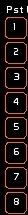
Press [F1] to save the current selection into a selection preset. [F1], [F2] and [F4] work with selection presets.
Recalling a preset (1 to 8) restores the corresponding set of minifaders (no accumulation).
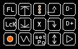
When one or more minifaders are selected (directly or via a preset), the following actions on the selection are available:
| Flash | Up | All Dock Loop | Prev Dock | Dock - |
| Lock | Down | At Zero All | Next Dock | Dock + |
| Loop Dock | Saw | Stop Position | Back and forth | Play embedded chaser |
The [At Zero All] command in this menu is a full reset: it zeros the LFO type, fader level, LFO speed, Loops and special LFO modes on the selected faders.
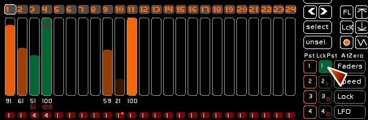
You can save the lock state of all 48 faders into a Lock Preset.
Saving and recalling a Lock Preset ignores the current minifader selection — it always applies to all 48 faders.
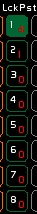
Lock states can be saved in up to 8 Lock Presets. Presets can be recalled with a single click or via a MIDI key.
Unlike earlier versions, All At Zero now affects only the selected minifaders. It lets you selectively zero the selected faders.
A snapshot of the fader states is taken before zeroing, so you can restore the previous state with [RECALL].
This function is designed for live use — it is cut, with no fade time.
A Fader Group (Fgroup) is a fader that contains the result of "slave" faders assigned to it. Fgroups work like subgroups in audio, HTP only.
To create an Fgroup:
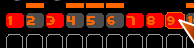
Assign to a dock:
In the Minifaders window:
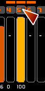
In the Faders window:
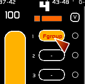
In the Minifaders window, you can hover over a fader to see the content of its Fgroup.
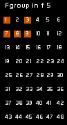